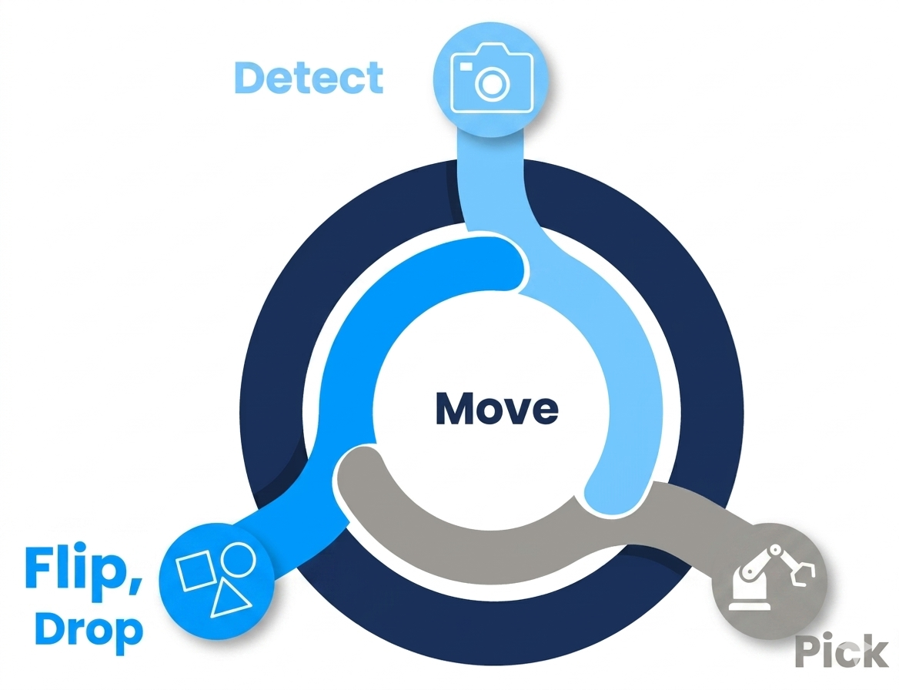
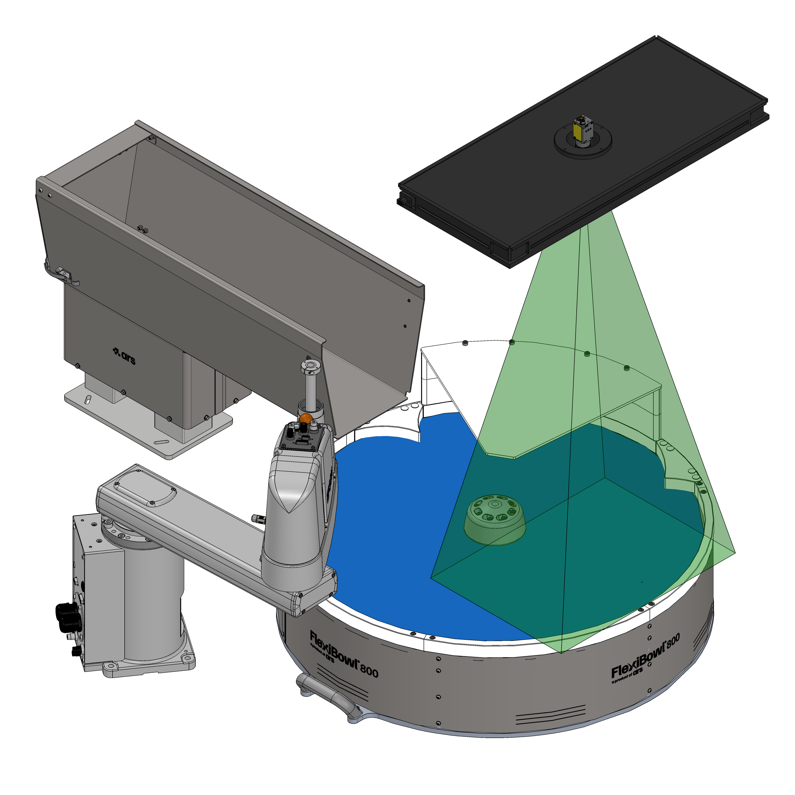
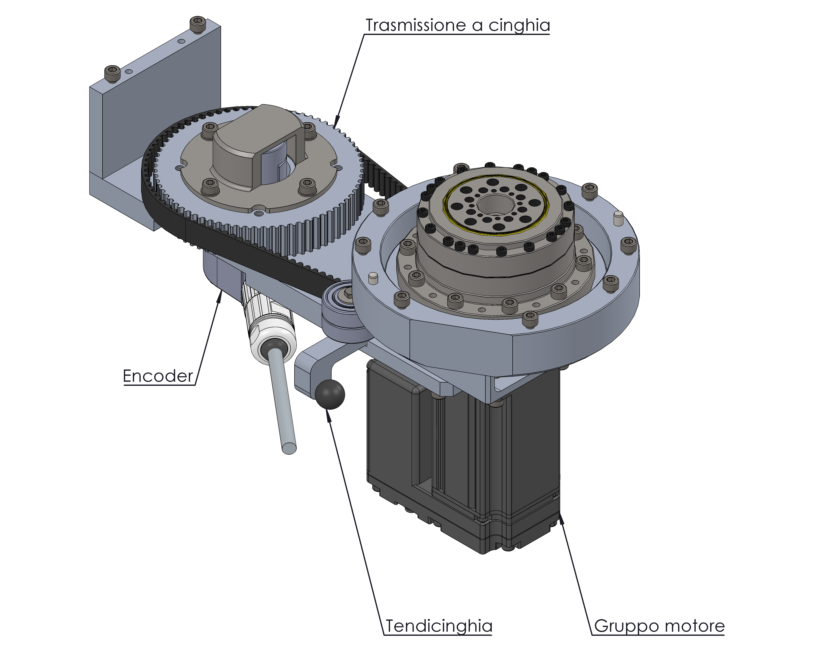

Mode Tracking#
Funzionamento in Tracking#
L’opzione Flexitracking consente di massimizzare la produttività del FlexiBowl® facendolo girare in maniera continua e senza interruzioni.
Invece di fermarsi a ogni ciclo per scattare la foto e dare al robot il tempo di raccogliere i pezzi presenti sull’area di visione, un encoder tiene traccia dell’angolo di rotazione effettuato dalla superficie del disco rigido dal momento dello scatto della foto a quello della presa del pezzo da parte del robot.
{kind=link}

Tip
Il funzionamento in tracking sposta l’area di presa che, se normalmente coincide con quella di visione, in questo caso sarà spostata a valle.
Fare riferimento al capitolo di Layout Best Practice per maggiori informazioni sul piazzamento consigliato del robot e degli altri accessori in caso di funzionamento standard e Flexitracking.
{kind=link}

Caratteristiche principali#
Caratteristica |
Descrizione |
|---|---|
Prestazioni |
Ideale per massimizzare le performance (fino al 100%) |
Area di visione |
Un settore avanti rispetto all’area di presa |
Parallelismo |
Scarico hopper, movimento/impulso FlexiBowl®, visione e picking in esecuzione simultanea |
Stabilità |
Maggiore stabilità del tempo di ciclo istantaneo |
Precisione |
Accuratezza inferiore rispetto alla modalità standard |
Ciclo operativo#
Il funzionamento in tracking si basa su un ciclo continuo suddiviso in quattro fasi che si svolgono in parallelo:
Fase |
Descrizione |
|---|---|
Detect |
La telecamera acquisisce l’immagine di un settore del FlexiBowl®, anticipando l’area di presa. |
Move |
La bowl ruota in modo continuo, senza fermarsi; l’encoder registra lo spostamento angolare in tempo reale. |
Flip / Drop |
I pezzi non correttamente orientati vengono ribaltati o scaricati nella posizione corretta. |
Pick |
Il robot preleva i pezzi compensando il movimento del FlexiBowl® grazie ai dati dell’encoder. |
Hardware e software richiesti#
Per abilitare il Flexitracking sono necessari i seguenti componenti:
Opzione encoder sul FlexiBowl®
Opzione tracking sul robot
Schema di collegamento#
Il Flexitracking si basa su un gruppo motore modificato con un supporto per una trasmissione a cinghia che alimenta l’encoder esterno.
{kind=link}

Il segnale dell’encoder viene distribuito tramite uno splitter interno, che lo invia sia al driver del motore sia al robot:
Componente |
Funzione |
|---|---|
Internal encoder splitter |
Sdoppia il segnale encoder verso il driver e verso il robot. |
External encoder |
Montato su un albero collegato alla puleggia condotta tramite una staffa di supporto; misura la rotazione effettiva della superficie del disco. |
Note operative#
Warning
La modalità Tracking offre prestazioni massime ma con una precisione leggermente inferiore rispetto alla modalità standard. Valutare l’adeguatezza in base ai requisiti di tolleranza del componente da manipolare.
Note
Per la configurazione del parametro di offset tra area di visione e area di presa, fare riferimento alla sezione di configurazione software del sistema.